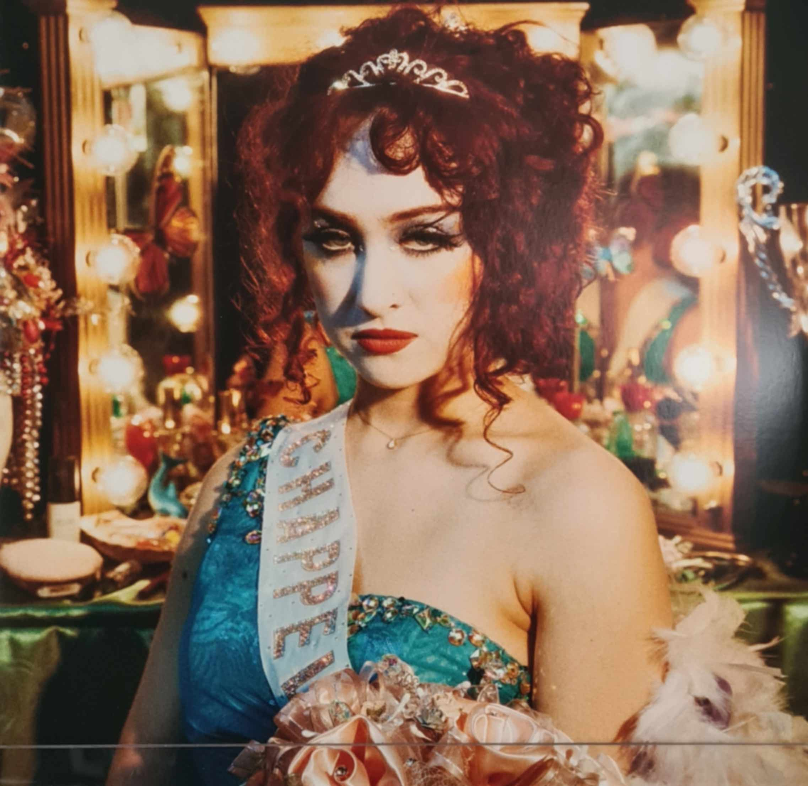
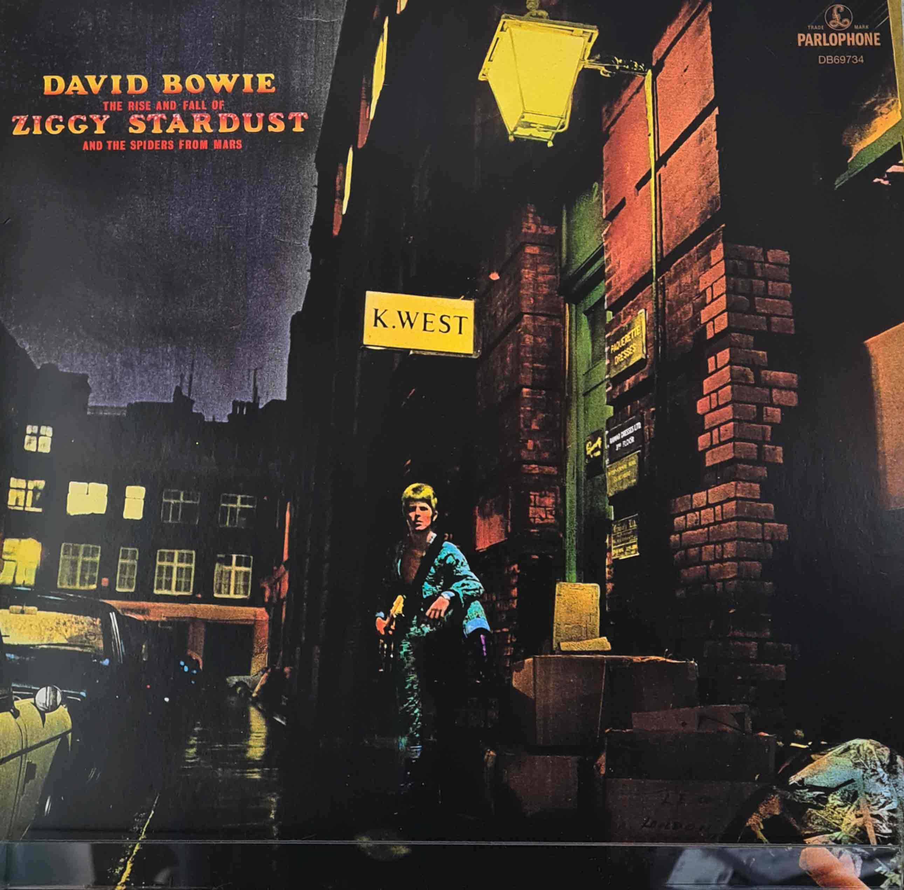

- Album: Teatro d'ira Vol.1
- Künstler: Maneskin
- Zustand: sehr gut
- Inhalt: 1LP
- Anmerkungen: sehr schöner sleeve mit Songtexten und Bildern; Platte in orange
- Album: Greatest Hits
- Künstler: Queen
- Zustand: sehr gut
- Inhalt: 2LP
- Anmerkungen: sleeves mit Coverbildern der Songs bzw. Alben
- Album: Born to Die
- Künstler: Lana del Rey
- Zustand: gut
- Inhalt: 2LP
- Anmerkungen: leichter Knick im sleeve

- Album: The Rise and Fall of a Midwest Princess
- Künstler: Chappell Roan
- Zustand: sehr gut
- Inhalt: 2LP
- Anmerkungen: aufklappbar
- Album: Back to Black
- Künstler: Amy Winehouse
- Zustand: gut
- Inhalt: 2LP
- Anmerkungen: Abnutzung an den Ecken des Covers; aufklappbar; Songtexte innen
- Album: Ancient Dreams in a Modern Land
- Künstler: MARINA
- Zustand: sehr gut
- Inhalt: 1LP
- Anmerkungen: -

- Album: Lungs
- Künstler: Florence + the maschine
- Zustand: sehr gut
- Inhalt: 2LP
- Anmerkungen: sehr schönes Cover innen
- Album: Changes on Bowie
- Künstler: David Bowie
- Zustand: sehr gut
- Inhalt: 1LP
- Anmerkungen: Sammlung Songs verschiedener Alben

- Album: The Rise and Fall of Ziggy Startdust and the Spiders from Mars
- Künstler: David Bowie
- Zustand: gut
- Inhalt: 1LP
- Anmerkungen: leichte Abnutzung des Covers an der oberen linken Ecke